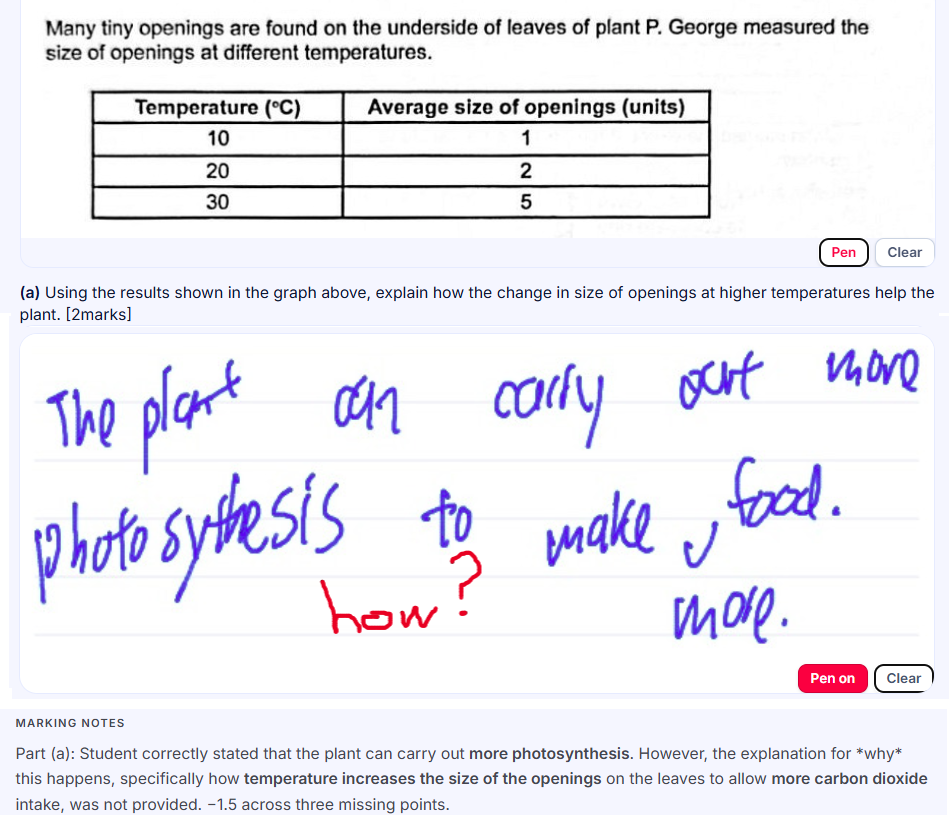
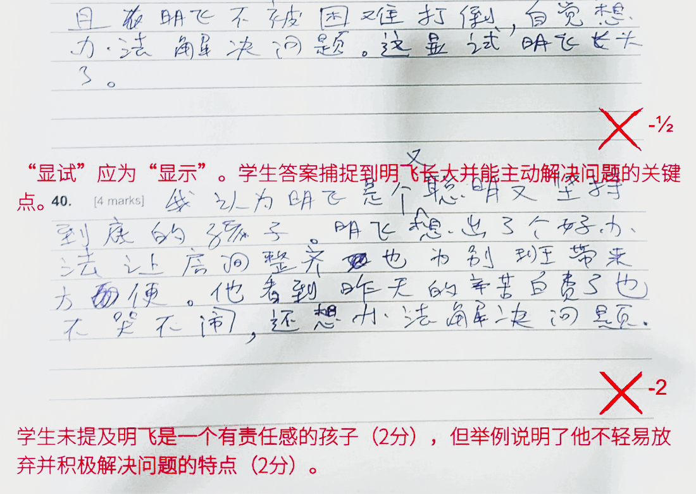
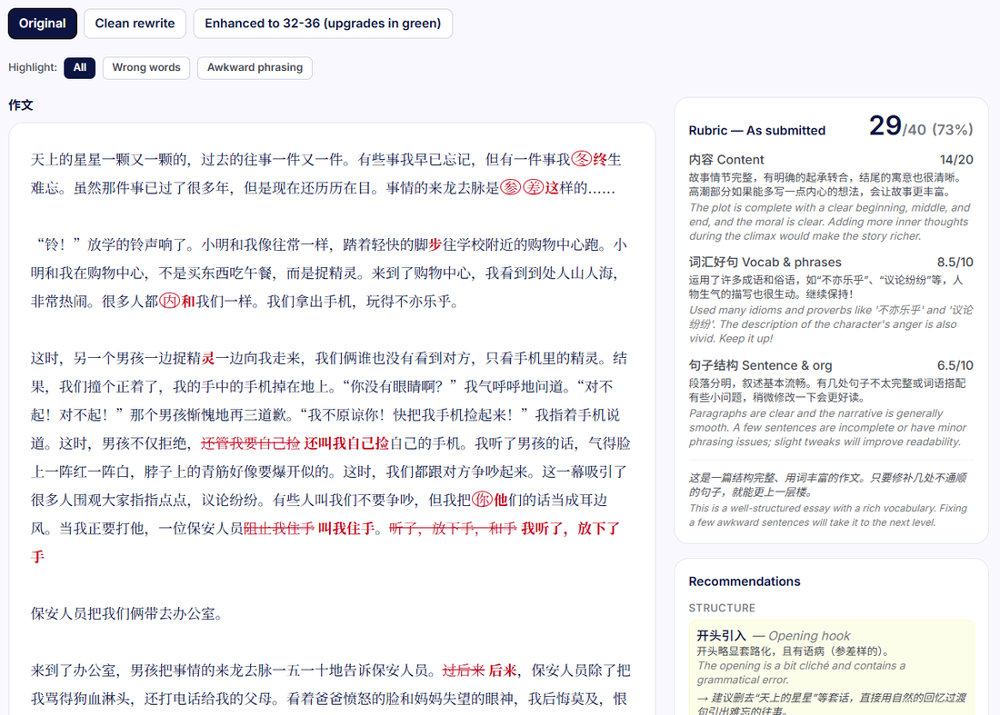
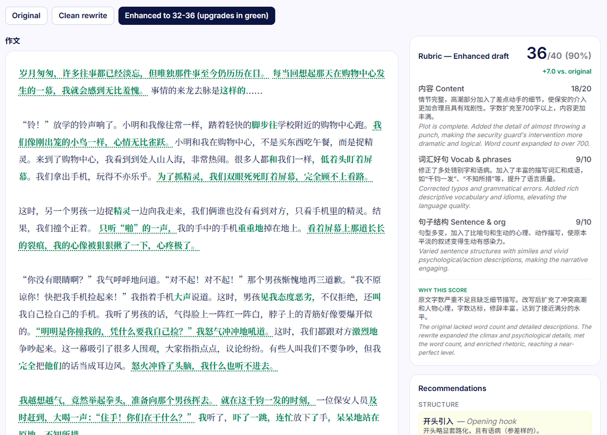
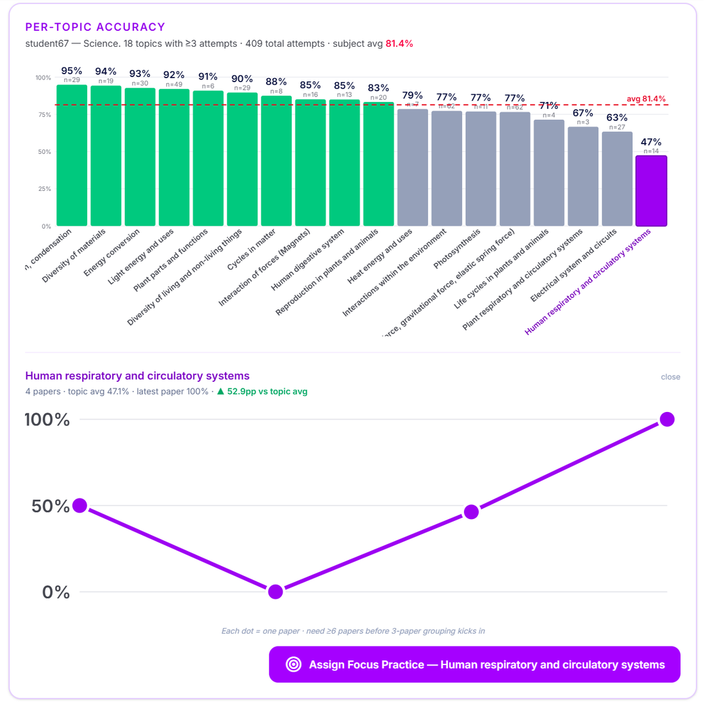
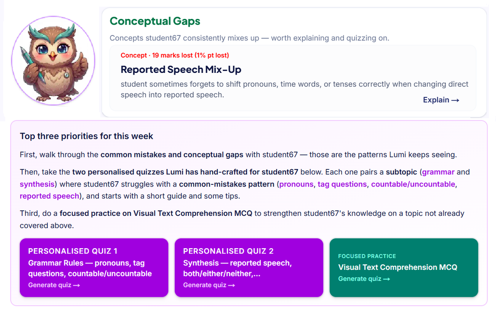
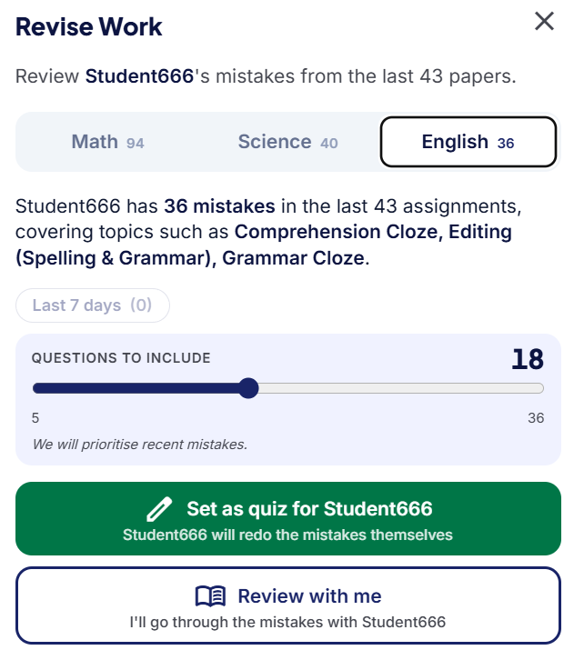
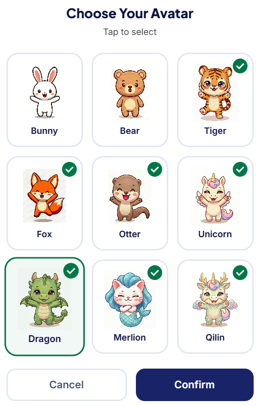

MarkForYou marks your child's work, pinpoints the exact concepts they keep getting wrong, and builds personalised practice to close those gaps — automatically. Less guessing, more progress.

Our platform marks, diagnoses and builds the next personalised quiz for your child — constantly.
Your child practises on a 10,000-question bank — MCQ and open-ended, personalised to them.
Marks MCQ and open-ended answers — including messy handwriting — instantly. Scored against MOE rubrics, pointing out missing keywords and steps, and explaining the grammar rules and concepts behind each one.
Lumi, our smart owl, reads every working step to detect conceptual errors and common mistakes. It consolidates the insights each week and crafts the next personalised practice for your child.
Every wrong answer becomes next week's quiz.
High accuracy marking and personalised learning.
Our proprietary high-accuracy marker reads handwriting, understands working steps, and scores against MOE-aligned rubrics. It awards partial credit where due, and explains exactly how to earn full marks using the concepts taught in school.


Instead of cramming yet another model essay, Lumi takes the essay your child already wrote and shows the surgical edits that lift its structure, flow, content and language toward model standard. Far more natural — and far easier for a child to actually learn from.


Same essay, surgical edits — a jump from 73% to 90%.
Lumi reads every working step to explain why marks are being lost — the recurring mistake, the misconception underneath it, and the exact sub-topics bleeding marks. Then it crafts the next practice to close them. Nothing for you to plan; the next quiz is ready and waiting.


Kids genuinely love our platform, even though they're attempting PSLE-level questions. Instant feedback and small rewards keep them going — and the way we schedule that practice is built on how memory actually works.


Do a quick 15-min diagnostic quiz, watch it get marked, see the gaps, and get the first personalised assessment and next steps — free, no credit card required.